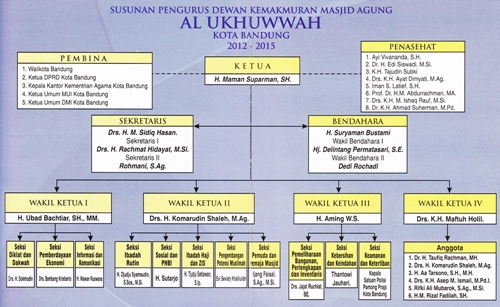

Masjid Al Ukhuwwah
Deskripsi masjid :
Kaum Muslim Kota Bandung patut bersyukur, karena dengan perkenan dan izin Allah SWT pada tahun 1998 bertambah lagi sebuah masjid yang cukup representatif, berdiri megah, berlokasi di pusat kota, mudah dikunjungi, hampir dari semua arah.
Al Ukhuwwah dibangun oleh Pemerintah Kota Bandung, dengan dana dari APBD Provinsi Jawa Barat dan APBD Kota Bandung.
Di samping untuk melengkapi sarana ibadah untuk warga kota, juga guna memenuhi kebutuhan internal, khususnya bagi para karyawan yang sebelumnya melaksanakan kegiatan ibadahnya di ruangan-ruangan bangunan kantor.
Keunikan :
Masjid Al Ukhuwwah memiliki beberapa keunikan, seperti terdapat kaligrafi asmaul husnah (99 nama tuhan) yang mengelilingi di dalam bangunan utama masjid, masjid yang besar ini dirancang dan dibangun tanpa menggunakan tiang yang banyak, sehingga di dalam masjid tampak sangat luas.
Fasilitas :
Basement, gedung serba guna, kantin, klinik, koperasi, kursus, perpustakaan.
Kegiatan :
Bakti sosial, haji, kultum, pengajian.
Struktur Organisasi :

| Kegiatan rutin |
| Kultum ba'da dzuhur |
Senin |
12.00 - 12.30 |
| Majelis ta'lim muslimah |
Rabu |
10.00 - 11.30 |
| Kajian fiqih |
Jumat |
18.30 - 20.00 |
| Kuliah sabtu dhuha |
Sabtu |
07.00 - 08.30 |
| Kegiatan non-rutin |
| Pernikahan : akad dan resepsi |
| Khinatan masal |
| Tabligh akbar |
| Haji |